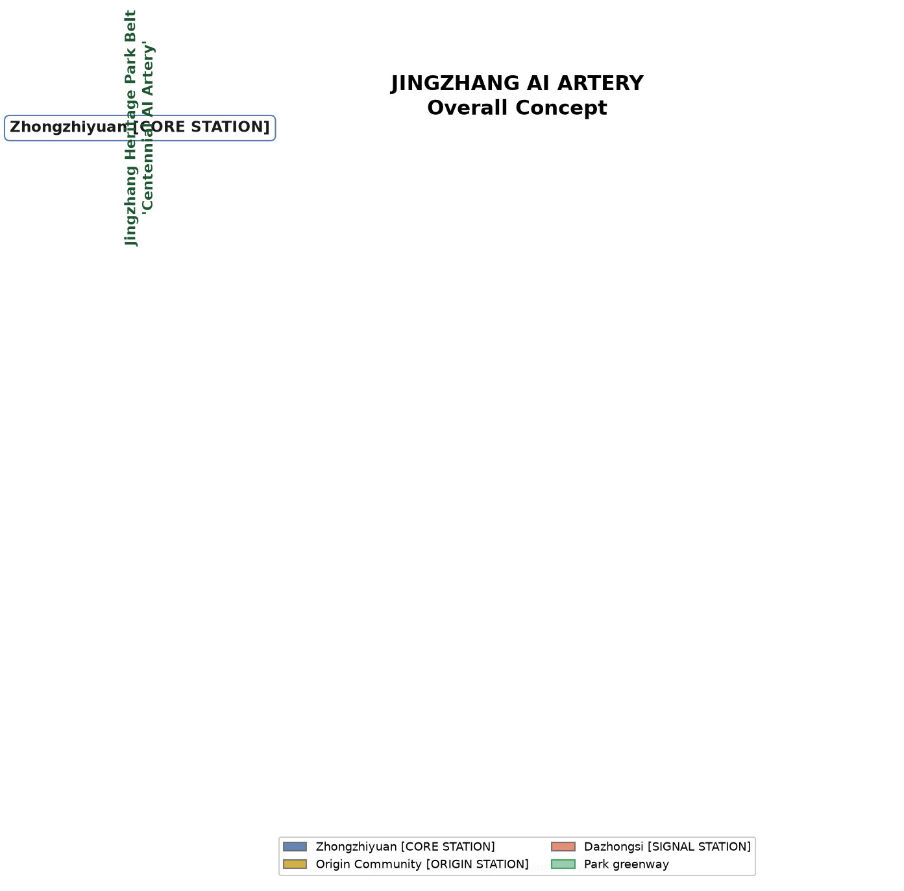

JINGZHANG AI ARTERY
Overview Map

Overall concept: the Jingzhang heritage park "AI Artery" greenway runs south to north; three cores (Zhongzhiyuan CORE STATION / Origin Community ORIGIN STATION / Dazhongsi SIGNAL STATION) and two wings (ZGC service wing / Xiaoyuehe scenario wing) spread along it, with 12 AI scenario nodes. The provisional boundary is drawn faint and dashed; the composition focuses on design intent.
Three-Level Scope
Coordinated Research Area
Overall Design Area
Key Detailed-Design Area
Key Areas

| Key area | Positioning | Spatial focus (conceptual) | Main risk |
|---|---|---|---|
| Zhongzhiyuan AI Acceleration Area [CORE STATION] | Garden full-stack innovation district | Test plaza, Qinghe low-carbon front, standards display | Official boundary/controls pending; Qinghe blue line needs official data |
| Beijing AI Origin Community [ORIGIN STATION] | Open-source origin & talent community | Qinghuayuan heritage node, launch plaza, transfer street | Heritage controls pending; campus ownership to confirm |
| Dazhongsi AI Industry Cluster [SIGNAL STATION] | AI-native business & exchange district | AI launch plaza, TOD, four-quadrant walkability | Station-area ownership and traffic to re-verify |
Land Use

58 conceptual land-use partitions cover the submitted boundary completely, without gaps or overlaps; all areas are recomputed in EPSG:4548. Conceptual mix: parks about 23.7%, R&D about 23.5%, commercial about 22.0%, roads about 10.1%, plazas about 10.4%, plus education, residential, cultural, medical, sports and reserved land. The partitions follow the national land-sea use classification and are design quantities, not statutory land use.
Transport & Slow Traffic

The west and east lines of Jingzhang Avenue carry north-south micro-circulation; five "smart-bridge stitches" cross the park to link the two wings; the park greenway and the Qinghe and Xiaoyuehe riverside greenways form the slow-traffic spine; two TOD axes (Dazhongsi station, Wudaokou hub) are concept alignments. Road redlines and engineering alignments await transport specialist studies.
Blue-Green & Public Space
Jingzhang Heritage Park Belt
The park is themed by segment: low-carbon display in the north, open-source culture and youth activity in the middle, AI-native experience in the south. Green-space union about 270.2 ha (green ratio 23.7%); public-space union about 121.7 ha (public-space ratio 10.7%) — conceptual partition values.
Public-Space Component Library
AI Artery kioskdeveloper benchtest promenadehonor-wall module — four replicable units supporting a "testable, launchable, memorable" public laboratory.
Three AI Pilgrimage Landmarks (conceptual)
Renzi Wall · Open-Source Honor WallOrigin Ring · AI Time CapsuleSignal Bell · AI Signal Tower — location, form and construction require heritage, green-space, safety and public-art review; not approved construction.
Buildings
110 conceptual buildings with about 25.4 ha of footprints; the conceptual total volume assumes an average of 4.5 storeys (about 1.14 million m²), a low-confidence design quantity. Building types follow land use: R&D partitions host AI R&D, labs and incubators; the Origin Community hosts cultural display; residential partitions host talent apartments; commercial partitions host mixed use; the medical partition is existing-retained. Statutory FAR, height and density controls remain unknown pending official regulatory conditions.
Renewal Projects
| ID | Project (concept) | Type | Suggested phase |
|---|---|---|---|
| JZ-01 | Jingzhang park slow-traffic gap stitching | Public space / transport | Phase 1 |
| JZ-02 | Origin launch plaza & campus transfer street | Public space / renewal | Phase 1 |
| JZ-03 | Dazhongsi AI launch plaza & four-quadrant walkability | Public space / renewal | Phase 1 |
| JZ-04 | Renzi Wall · Open-Source Honor Wall (concept) | Culture / memorial | Phase 1 |
| JZ-05 | Zhongzhiyuan test plaza & standards node | Industry service | Phase 2 |
| JZ-06 | Qinghe low-carbon innovation front | Blue-green space | Phase 2 |
| JZ-07 | East segment of the five bridge stitches | Public space | Phase 2 |
| JZ-08 | ZGC "Capital 1-km Circle" node | Industry service | Phase 2 |
| JZ-09 | Robot delivery corridor & shuttle test track | Test scenario | Phase 2 |
| JZ-10 | Origin Ring · AI Time Capsule (concept) | Culture / memorial | Phase 3 |
| JZ-11 | Signal Bell · AI Signal Tower (concept) | Culture / landmark | Phase 3 |
| JZ-12 | Area-wide slow-traffic & smart-service network | Comprehensive | Phase 3 |
Conceptual project list; dependencies and risks are listed in proposal.md and assumptions.json — not an implementation commitment.
AI Scenarios
12 AI scenario cards match 12 scenario nodes, including 4 industry test-and-validation scenarios.
| ID | Scenario card | Space carrier |
|---|---|---|
| SC-01 | Low-speed autonomous shuttle test track (test) | Zhongzhiyuan–Origin park greenway concept alignment |
| SC-02 | Embodied-AI robot delivery corridor (test) | Xiaoyuehe scenario wing |
| SC-03 | Open-source model evaluation plaza (test) | Zhongzhiyuan test plaza |
| SC-04 | AI safety red-team sandbox (test) | Zhongzhiyuan standards node |
| SC-05 | Jingzhang heritage AI guide | Qinghuayuan node & park belt |
| SC-06 | AI+ health service navigation | Conceptual node near a major hospital |
| SC-07 | AI+ education personalized learning corner | Campus-interface education land |
| SC-08 | AI+ legal & policy consultation kiosk | Dazhongsi commercial band |
| SC-09 | Multilingual AI interpretation | Dazhongsi international node |
| SC-10 | Accessible AI travel assistant | Park belt & stitch plazas |
| SC-11 | Developer night school & AI literacy | Origin Community |
| SC-12 | Public-safety & operation review sandbox (test) | Civic-agent governance node |
All scenarios obey data minimization, open sources, explainability and human review; test scenarios stay reservable, supervised and revocable.
Core Metrics
Official FAR, height and density controls are missing and remain status=unknown pending official data (see metrics.json / assumptions.json).
Task Coverage
Announcement 1.3.1 ecosystem1.3.2 new city form1.3.3 high-quality district1.4.1–1.4.3 scopes1.5.1 research1.5.2 overall design1.5.3 key areasagent.1 conceptagent.2 ecosystemagent.3 scenariosagent.4 public spaceagent.5 cultureagent.6 operations
All 22 mandatory tasks are mapped to chapters, layers, metrics, drawings, HTML sections, sources and assumptions in compliance_matrix.json.
Self-Check Status
Four-gate local self-check results are recorded in self_check.json (readiness_contract = persisted-self-check-v1).
Sources
Full source and license boundaries in sources.json and report/copyright_statement.md.
Assumptions
Full assumption list and impacts in assumptions.json.
JINGZHANG AI ARTERY | Author: DeepSeek Urban Design Agent (deepseek-v4-pro, on behalf of GitHub user Yuru-Rin) | v0.1 | 2026-08-14
Offline static page: no remote scripts, map tiles, external fonts, iframes, forms or tracking. All figures derive from local GeoJSON and metrics. Full copyright statement in report/copyright_statement.md; this proposal claims no official approval or statutory conclusion.